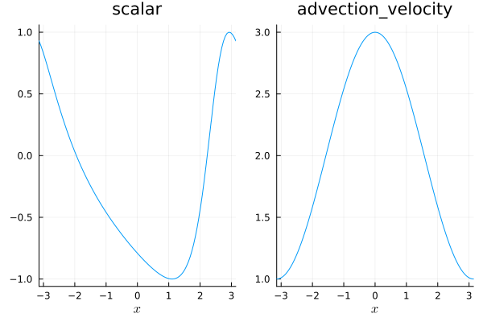

12: Adding a non-conservative equation


If you want to use Trixi.jl for your own research, you might be interested in a new physics model that is not present in Trixi.jl. In this tutorial, we will implement the nonconservative linear advection equation in a periodic domain
\[\left\{ \begin{aligned}&\partial_t u(t,x) + a(x) \partial_x u(t,x) = 0 \\ &u(0,x)=\sin(x) \\ &u(t,-\pi)=u(t,\pi) \end{aligned} \right.\]
where $a(x) = 2 + \cos(x)$. The analytic solution is
\[u(t,x)=-\sin \left(2 \tan ^{-1}\left(\sqrt{3} \tan \left(\frac{\sqrt{3} t}{2}-\tan ^{-1}\left(\frac{1}{\sqrt{3}}\tan \left(\frac{x}{2}\right)\right)\right)\right)\right)\]
In Trixi.jl, such a mathematical model is encoded as a subtype of Trixi.AbstractEquations.
Basic setup
Since there is no native support for variable coefficients, we need to transform the PDE to the following system:
\[\left\{ \begin{aligned}&\partial_t \begin{pmatrix}u(t,x)\\a(t,x) \end{pmatrix} +\begin{pmatrix} a(t,x) \partial_x u(t,x) \\ 0 \end{pmatrix} = 0 \\ &u(0,x)=\sin(x) \\ &a(0,x)=2+\cos(x) \\ &u(t,-\pi)=u(t,\pi) \end{aligned} \right.\]
# Define new physicsusing Trixiusing Trixi: AbstractEquations, get_node_varsimport Trixi: varnames, default_analysis_integrals, flux, max_abs_speed_naive, have_nonconservative_terms# Since there is no native support for variable coefficients, we use two# variables: one for the basic unknown `u` and another one for the coefficient `a`struct NonconservativeLinearAdvectionEquation <: AbstractEquations{1, # spatial dimension 2} # two variables (u,a)endfunction varnames(::typeof(cons2cons), ::NonconservativeLinearAdvectionEquation) return ("scalar", "advection_velocity")enddefault_analysis_integrals(::NonconservativeLinearAdvectionEquation) = ()# The conservative part of the flux is zeroflux(u, orientation, equation::NonconservativeLinearAdvectionEquation) = zero(u)# Calculate maximum wave speed for local Lax-Friedrichs-type dissipationfunction max_abs_speed_naive(u_ll, u_rr, orientation::Integer, ::NonconservativeLinearAdvectionEquation) _, advection_velocity_ll = u_ll _, advection_velocity_rr = u_rr return max(abs(advection_velocity_ll), abs(advection_velocity_rr))end# We use nonconservative termshave_nonconservative_terms(::NonconservativeLinearAdvectionEquation) = Trixi.True()# This "nonconservative numerical flux" implements the nonconservative terms.# In general, nonconservative terms can be written in the form# g(u) ∂ₓ h(u)# Thus, a discrete difference approximation of this nonconservative term needs# - `u mine`: the value of `u` at the current position (for g(u))# - `u_other`: the values of `u` in a neighborhood of the current position (for ∂ₓ h(u))function flux_nonconservative(u_mine, u_other, orientation, equations::NonconservativeLinearAdvectionEquation) _, advection_velocity = u_mine scalar, _ = u_other return SVector(advection_velocity * scalar, zero(scalar))endflux_nonconservative (generic function with 1 method)The implementation of nonconservative terms uses a single "nonconservative flux" function flux_nonconservative. It will basically be applied in a loop of the form
du_m(D, u) = sum(D[m, l] * flux_nonconservative(u[m], u[l], 1, equations)) # orientation 1: xwhere D is the derivative matrix and u contains the nodal solution values.
Now, we can run a simple simulation using a DGSEM discretization.
# Create a simulation setupusing Trixiusing OrdinaryDiffEqTsit5equation = NonconservativeLinearAdvectionEquation()# You can derive the exact solution for this setup using the method of# characteristicsfunction initial_condition_sine(x, t, equation::NonconservativeLinearAdvectionEquation) x0 = -2 * atan(sqrt(3) * tan(sqrt(3) / 2 * t - atan(tan(x[1] / 2) / sqrt(3)))) scalar = sin(x0) advection_velocity = 2 + cos(x[1]) return SVector(scalar, advection_velocity)end# Create a uniform mesh in 1D in the interval [-π, π] with periodic boundariesmesh = TreeMesh(-Float64(π), Float64(π), # min/max coordinates initial_refinement_level = 4, periodicity = true)# Create a DGSEM solver with polynomials of degree `polydeg`# Remember to pass a tuple of the form `(conservative_flux, nonconservative_flux)`# as `surface_flux` and `volume_flux` when working with nonconservative termsvolume_flux = (flux_central, flux_nonconservative)surface_flux = (flux_lax_friedrichs, flux_nonconservative)solver = DGSEM(polydeg = 3, surface_flux = surface_flux, volume_integral = VolumeIntegralFluxDifferencing(volume_flux))# Setup the spatial semidiscretization containing all ingredientssemi = SemidiscretizationHyperbolic(mesh, equation, initial_condition_sine, solver; boundary_conditions = boundary_condition_periodic)# Create an ODE problem with given time spantspan = (0.0, 1.0)ode = semidiscretize(semi, tspan)# Set up some standard callbacks summarizing the simulation setup and computing# errors of the numerical solutionsummary_callback = SummaryCallback()analysis_callback = AnalysisCallback(semi, interval = 50)callbacks = CallbackSet(summary_callback, analysis_callback)# OrdinaryDiffEq's `solve` method evolves the solution in time and executes# the passed callbackssol = solve(ode, Tsit5(), abstol = 1.0e-6, reltol = 1.0e-6; ode_default_options()..., callback = callbacks)# Plot the numerical solution at the final timeusing Plots: plotplot(sol)
You see a plot of the final solution.
We can check whether everything fits together by refining the grid and comparing the numerical errors. First, we look at the error using the grid resolution above.
error_1 = analysis_callback(sol).l2 |> first0.00029609575838685415Next, we increase the grid resolution by one refinement level and run the simulation again.
mesh = TreeMesh(-Float64(π), Float64(π), # min/max coordinates initial_refinement_level = 5, periodicity = true)semi = SemidiscretizationHyperbolic(mesh, equation, initial_condition_sine, solver; boundary_conditions = boundary_condition_periodic)tspan = (0.0, 1.0)ode = semidiscretize(semi, tspan);summary_callback = SummaryCallback()analysis_callback = AnalysisCallback(semi, interval = 50)callbacks = CallbackSet(summary_callback, analysis_callback);sol = solve(ode, Tsit5(), abstol = 1.0e-6, reltol = 1.0e-6; ode_default_options()..., callback = callbacks);error_2 = analysis_callback(sol).l2 |> first1.8602128505939497e-5error_1 / error_215.917305285377067As expected, the new error is roughly reduced by a factor of 16, corresponding to an experimental order of convergence of 4 (for polynomials of degree 3).
For non-trivial boundary conditions involving non-conservative terms, please refer to the section on Other available example elixirs with non-trivial BC.
Summary of the code
Here is the complete code that we used (without the callbacks since these create a lot of unnecessary output in the doctests of this tutorial). In addition, we create the struct inside the new module NonconservativeLinearAdvection. That ensures that we can re-create structs defined therein without having to restart Julia.
Define new physics
module NonconservativeLinearAdvectionusing Trixiusing Trixi: AbstractEquations, get_node_varsimport Trixi: varnames, default_analysis_integrals, flux, max_abs_speed_naive, have_nonconservative_terms# Since there is not yet native support for variable coefficients, we use two# variables: one for the basic unknown `u` and another one for the coefficient `a`struct NonconservativeLinearAdvectionEquation <: AbstractEquations{1, # spatial dimension 2} # two variables (u,a)endfunction varnames(::typeof(cons2cons), ::NonconservativeLinearAdvectionEquation) return ("scalar", "advection_velocity")enddefault_analysis_integrals(::NonconservativeLinearAdvectionEquation) = ()# The conservative part of the flux is zeroflux(u, orientation, equation::NonconservativeLinearAdvectionEquation) = zero(u)# Calculate maximum wave speed for local Lax-Friedrichs-type dissipationfunction max_abs_speed_naive(u_ll, u_rr, orientation::Integer, ::NonconservativeLinearAdvectionEquation) _, advection_velocity_ll = u_ll _, advection_velocity_rr = u_rr return max(abs(advection_velocity_ll), abs(advection_velocity_rr))end# We use nonconservative termshave_nonconservative_terms(::NonconservativeLinearAdvectionEquation) = Trixi.True()# This "nonconservative numerical flux" implements the nonconservative terms.# In general, nonconservative terms can be written in the form# g(u) ∂ₓ h(u)# Thus, a discrete difference approximation of this nonconservative term needs# - `u mine`: the value of `u` at the current position (for g(u))# - `u_other`: the values of `u` in a neighborhood of the current position (for ∂ₓ h(u))function flux_nonconservative(u_mine, u_other, orientation, equations::NonconservativeLinearAdvectionEquation) _, advection_velocity = u_mine scalar, _ = u_other return SVector(advection_velocity * scalar, zero(scalar))endend # module# Create a simulation setupimport .NonconservativeLinearAdvectionusing Trixiusing OrdinaryDiffEqTsit5equation = NonconservativeLinearAdvection.NonconservativeLinearAdvectionEquation()# You can derive the exact solution for this setup using the method of# characteristicsfunction initial_condition_sine(x, t, equation::NonconservativeLinearAdvection.NonconservativeLinearAdvectionEquation) x0 = -2 * atan(sqrt(3) * tan(sqrt(3) / 2 * t - atan(tan(x[1] / 2) / sqrt(3)))) scalar = sin(x0) advection_velocity = 2 + cos(x[1]) return SVector(scalar, advection_velocity)end# Create a uniform mesh in 1D in the interval [-π, π] with periodic boundariesmesh = TreeMesh(-Float64(π), Float64(π), # min/max coordinates initial_refinement_level = 4, periodicity = true)# Create a DGSEM solver with polynomials of degree `polydeg`# Remember to pass a tuple of the form `(conservative_flux, nonconservative_flux)`# as `surface_flux` and `volume_flux` when working with nonconservative termsvolume_flux = (flux_central, NonconservativeLinearAdvection.flux_nonconservative)surface_flux = (flux_lax_friedrichs, NonconservativeLinearAdvection.flux_nonconservative)solver = DGSEM(polydeg = 3, surface_flux = surface_flux, volume_integral = VolumeIntegralFluxDifferencing(volume_flux))# Setup the spatial semidiscretization containing all ingredientssemi = SemidiscretizationHyperbolic(mesh, equation, initial_condition_sine, solver; boundary_conditions = boundary_condition_periodic)# Create an ODE problem with given time spantspan = (0.0, 1.0)ode = semidiscretize(semi, tspan);# Set up some standard callbacks summarizing the simulation setup and computing# errors of the numerical solutionsummary_callback = SummaryCallback()analysis_callback = AnalysisCallback(semi, interval = 50)callbacks = CallbackSet(summary_callback, analysis_callback);# OrdinaryDiffEq's `solve` method evolves the solution in time and executes# the passed callbackssol = solve(ode, Tsit5(), abstol = 1.0e-6, reltol = 1.0e-6; ode_default_options()...);# Plot the numerical solution at the final timeusing Plots: plotplot(sol);Package versions
These results were obtained using the following versions.
using InteractiveUtilsversioninfo()using PkgPkg.status(["Trixi", "OrdinaryDiffEqTsit5", "Plots"], mode = PKGMODE_MANIFEST)Julia Version 1.10.12
Commit d93beab124c (2026-08-15 10:29 UTC)
Build Info:
Official https://julialang.org/ release
Platform Info:
OS: Linux (x86_64-linux-gnu)
CPU: 4 × AMD EPYC 7763 64-Core Processor
WORD_SIZE: 64
LIBM: libopenlibm
LLVM: libLLVM-15.0.7 (ORCJIT, znver3)
Threads: 1 default, 0 interactive, 1 GC (on 4 virtual cores)
Environment:
JULIA_PKG_SERVER_REGISTRY_PREFERENCE = eager
Status `~/work/Trixi.jl/Trixi.jl/docs/Manifest.toml`
[b1df2697] OrdinaryDiffEqTsit5 v2.1.4
[91a5bcdd] Plots v1.41.7
[a7f1ee26] Trixi v0.17.6-DEV `~/work/Trixi.jl/Trixi.jl`Additional modifications
When one carries auxiliary variable(s) in the solution vector, e.g., for non-constant coefficient advection problems some routines may require modification to avoid adding dissipation to the variable coefficient quantity a that is carried as an auxiliary variable in the solution vector. In particular, a specialized DissipationLocalLaxFriedrichs term used together with the numerical surface flux flux_lax_friedrichs prevents "smearing" the variable coefficient a artificially.
# Specialized dissipation term for the Lax-Friedrichs surface flux@inline function (dissipation::DissipationLocalLaxFriedrichs)(u_ll, u_rr, orientation::Integer, equation::NonconservativeLinearAdvectionEquation) λ = dissipation.max_abs_speed(u_ll, u_rr, orientation, equation) diss = -0.5 * λ * (u_rr - u_ll) # do not add dissipation to the variable coefficient a used as last entry of u return SVector(diss[1], zero(u_ll))endAnother modification is necessary if one wishes to use the stage limiter PositivityPreservingLimiterZhangShu during the time integration. This limiter takes in a variable (or set of variables) to limit and ensure positivity. However, these variables are used to compute the limiter quantities that are then applied to every variable in the solution vector u. To avoid artificially limiting (and in turn changing) the variable coefficient quantity that should remain unchanged, a specialized implementation of the limiter_zhang_shu! function is required. For the example equation given in this tutorial, this new function for the limiting would take the form
# Specialized positivity limiter that avoids modification of the auxiliary variable `a`function Trixi.limiter_zhang_shu!(u, threshold, variable, mesh, equations::NonconservativeLinearAdvectionEquation, dg, cache) weights = dg.basis for element in eachelement(dg, cache) # determine minimum value value_min = typemax(eltype(u)) for i in eachnode(dg) u_node = get_node_vars(u, equations, dg, i, element) value_min = min(value_min, variable(u_node, equations)) end # detect if limiting is necessary value_min < threshold || continue # compute mean value u_mean = zero(get_node_vars(u, equations, dg, 1, element)) for i in eachnode(dg) u_node = get_node_vars(u, equations, dg, i, element) u_mean += u_node * weights[i] end # note that the reference element is [-1,1]^ndims(dg), thus the weights sum to 2 u_mean = u_mean / 2^ndims(mesh) # Compute the value directly with the mean values, as we assume that # Jensen's inequality holds. value_mean = variable(u_mean, equations) theta = (value_mean - threshold) / (value_mean - value_min) # This avoids the issue when `value_mean` is slightly smaller than `threshold` # (e.g., due to finite precision effects in PositivityPreservingLimiterLiuZhang), # which results in invalid theta values smaller than 0. Note that min(1, theta) # is not necessary since we are only enforcing lower bounds. theta = max(0, theta) for i in eachnode(dg) u_node = get_node_vars(u, equations, dg, i, element) _, a_node = u_node scalar_mean, _ = u_mean # mean values of variable coefficient not used as it must not be overwritten u_mean = SVector(scalar_mean, a_node) set_node_vars!(u, theta * u_node + (1 - theta) * u_mean, equations, dg, i, element) end end return nothingendThis page was generated using Literate.jl.